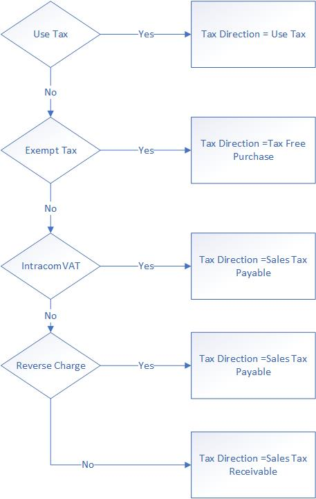
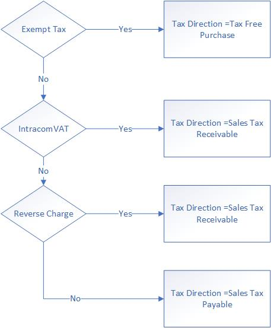
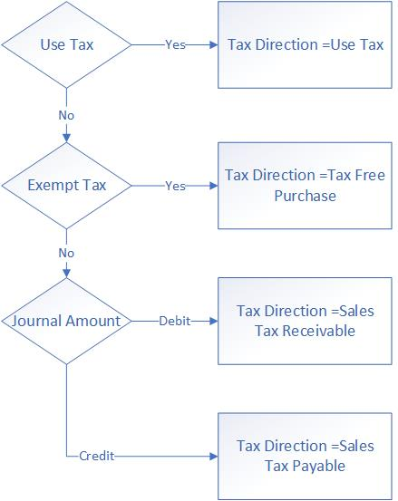
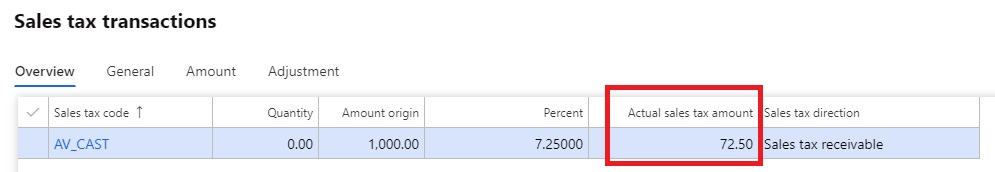

Sales tax calculation on general journal lines
This topic explains how sales taxes are calculated for different types of accounts (vendor, customer, ledger, and project) on general journal lines.
The process can be divided into three steps:
Determine the sales tax direction.
Determine the sales tax amount that will be stored a temporary sales tax table.
Determine the sales tax amount and account on the voucher.
Determine the sales tax direction
The way that the sales tax direction is determined depends on the type of account in the voucher. The sales tax direction is determined by the combination of account type and sales tax code. The following sections the possibilities in more detail.
Account type is Project
If a voucher has journal line where the account type is Project, all the journal lines in the voucher apply the same tax direction. The following illustration shows the rule. The following points show the possible tax directions for project accounts.
• If the sales tax code is use tax, then sales tax direction is Use Tax.
• If the sales tax code is exempt tax, then sales tax direction is Tax Free Purchase.
• If the sales tax code is intracom VAT, then sales tax direction is Sales Tax Payable.
• If the sales tax code is reverse charge, then sales tax direction is Sales Tax Payable.
Otherwise, sales tax direction is Sales Tax Receivable.
The following diagram illustrates the rule graphically.

Account type is Vendor
If a voucher has journal line where the account type is Vendor, all the journal lines in the voucher apply the same tax direction. The following points show the possible tax directions for vendor accounts.
• If the sales tax code is use tax, then sales tax direction is Use Tax.
• If the sales tax code is exempt tax, then sales tax direction is Tax Free Purchase.
• If the sales tax code is intracom VAT, then sales tax direction is Sales Tax Payable.
• If the sales tax code is reverse charge, then sales tax direction is Sales Tax Payable.
Otherwise, sales tax direction is Sales Tax Receivable.
The following diagram illustrates the rule graphically.
Account type is Customer
If a voucher has journal line where the account type is Customer, all the journal lines in the voucher apply the same tax direction. The following points show the possible tax directions for customer accounts.
• If the sales tax code is exempt tax, then sales tax direction is Tax Free Purchase.
• If the sales tax code is intracom VAT, then sales tax direction is Sales Tax Receivable.
• If the sales tax code is reverse charge, then sales tax direction is Sales Tax Receivable.
Otherwise, sales tax direction is Sales Tax Payable.
The following diagram illustrates the rule graphically.

Account type is Ledger
The following illustration shows the rule that applies when a voucher has only journal lines where the account type is Ledger. The following points show the possible tax directions for ledger accounts.
• If the sales tax code is use tax, then sales tax direction is Use Tax.
• If the sales tax code is exempt tax, then sales tax direction is Tax Free Purchase.
Otherwise, if the journal amount is debit (positive) ,sales tax direction is Sales Tax Receivable; if the journal amount is credit (negative) ,sales tax direction is Sales Tax Payable.
The following diagram illustrates the rule graphically.

Override the sales tax direction
You can override the sales tax direction when the voucher contains only lines where the account type is Ledger.
Go to General ledger > Chart of accounts > Accounts > Main accounts, and select the Legal entity overrides FastTab.
Determine the sales tax amount
This section describes how the sales tax amount sign is calculated.

The following table shows the generic rule for determining the sign of sales tax amounts in the temporary sales tax table.
| Journal line amount | Sales tax direction | Sales tax amount sign |
|---|---|---|
| Positive | Sales Tax Receivable | Positive |
| Positive | Sales Tax Payable | Negative |
| Negative | Sales Tax Receivable | Negative |
| Negative | Sales Tax Payable | Positive |
There is a special rule for vouchers that have only Project or Ledger lines, when a sales tax group or item sales tax group is selected on the Ledger line. This rule is controlled by Enable independent sales tax calculation feature for general journals. When this feature is turned off, the tax amount of the Ledger line uses the debit/credit direction of the Project line. When the feature is turned on, the tax amount of the Ledger line uses its own debit/credit direction. The following tables show the rule for each scenario.
Rule when the feature is turned on
| Journal line amount of project | Sales tax direction | Sales tax amount sign |
|---|---|---|
| Positive | Sales Tax Receivable | Positive |
| Negative | Sales Tax Receivable | Negative |
Rule when the feature is turned off
| Journal line amount of ledger | Sales tax direction | Sales tax amount sign |
|---|---|---|
| Positive | Sales Tax Receivable | Positive |
| Negative | Sales Tax Receivable | Negative |
Determine the sales tax amount and account on the voucher
When you post sales taxes, the main account is retrieved from the ledger posting group profile. When sales taxes are receivable, the system uses the Sales Tax Receivable account that is specified in the profile. For sales taxes that are payable, the system uses Sales Tax Payable account that is specified in the profile.
The following table shows the generic rule.
| Sales tax direction | Sales tax amount sign | Sales tax account | Amount on voucher |
|---|---|---|---|
| Sales Tax Receivable | Positive | Tax Receivable Account | Positive (Debit) |
| Sales Tax Receivable | Negative | Tax Receivable Account | Negative(Credit) |
| Sales Tax Payable | Positive | Tax Payable Account | Negative(Credit) |
| Sales Tax Payable | Negative | Tax Payable Account | Positive (Debit) |